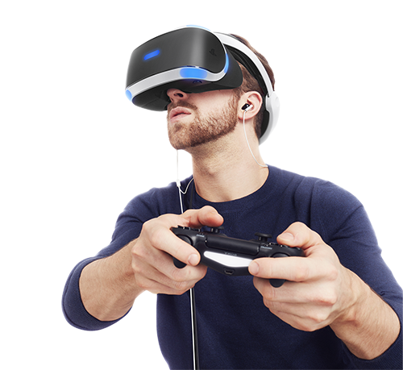
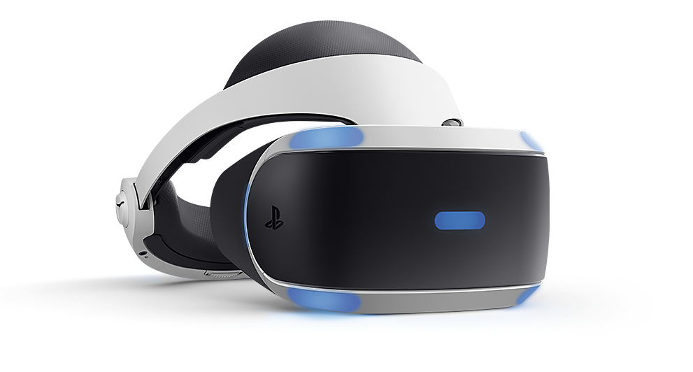
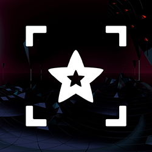

VR 게임을 즐기는 새로운 방법
가상 공간 속에서 대형 화면으로 영화 및 게임을 즐겨 보십시오!
PS VR은 시네마틱 모드라는 기능을 지원해 사용자가 PS4™ 게임과 영화를 비롯한 콘텐츠들을 VR 헤드셋을 쓴 채로 거대한 가상 화면에서 즐길 수 있게 해줍니다.

초현실적의 3D 환경 제공
PlayStation®VR과 함께 게임 속에 들어와 있는 듯한 최고의 몰입감을 경험해 보세요.
5.7"의 OLED 화면으로 초현실적인 3D 환경을 생생하게 느끼십시오. 기기에 내장된 광학 렌즈는 여러분께 약 100도에 달하는 시야각을 제공합니다. 그리고 위나 아래, 사방에서 들려오는 소리의 방향과 거리를 정확하게 감지할 수 있는 최첨단 3D 오디오로 이전과는 다른 공간감도 느낄 수 있습니다.
부드러운 화면과 빠른 프레임 전환을 위해 PS VR은 초당 60프레임의 VR 콘텐츠를 초당 120프레임으로 변환합니다. 매력적이고 편안한 VR 체험을 위해서는 짧은 지연 시간이 중요하고, PS VR의 지연 시간은 18ms(0.018초) 이하입니다.

새로운 경험을 제공하는 VR 체험
PS VR은 "1920 x RGB x 1080"이라고도 알려진 1920 x 1080 해상도를 갖춘 5.7"의 단일 풀 컬러 OLED RGB 디스플레이를 사용하고 있습니다. PS VR은 완전한 적색, 녹색, 파란색 서브픽셀을 사용해 온전한 색상을 구현합니다.
또한 헤드셋에는 PS Camera와 연동해 머리의 위치와 방향을 실시간으로 추적하는 파란색의 LED 트래킹 라이트와 모션 센서가 포함되어 있습니다. 이 기술로 PS VR은 플레이어의 몰입감을 더 증폭시키고 강렬한 현실감을 구현하고 있습니다.
PS VR에서 이용 가능한 엔터테인먼트 앱
YouTube
DUALSHOCK®4 무선 컨트롤러의 SHARE 버튼을 통해 자신의 게임 플레이 영상을 업로드하세요.

Littlstar VR Cinema
Littlstar는 최고의 가상 현실과 360도 경험을 제공하는 몰입형 VR 플랫폼입니다.